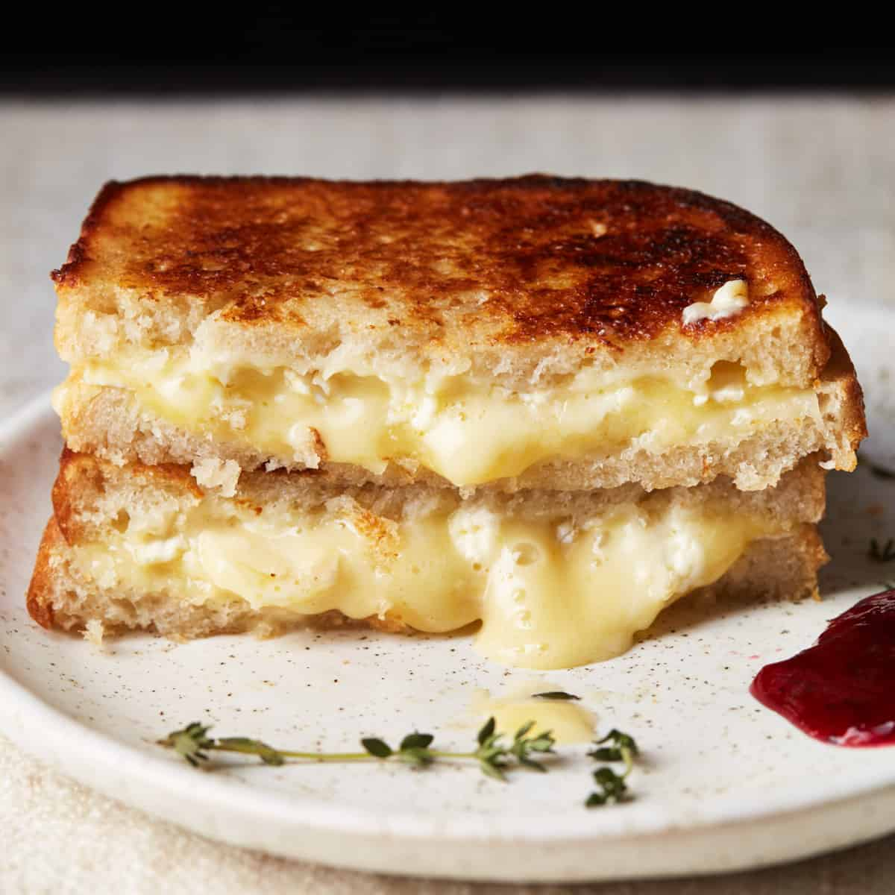

Elite Grilled Cheese
Home

Tyler's Elite Grilled Cheese
This is a simple yet powerful recipe for an elite grilled cheese sandwhich. The basis is
classic grilled cheese, but with a few extra ingredients to take it to the next level. This
recipe is perfect for a quick lunch or dinner, and can be easily customized with your favorite
cheeses and breads.
Ingredients:
- 2 slices of sourdough bread
- 1/2 cup of fresh grated cheddar cheese or cheese of your choice
- 2 tbsp of butter, please only use real butter!
- 3 not-too-thick and not-too-thin slices of roma tomatos
- A pinch of salt and pepper
- Chopped basil, optional, but encouraged!
Directions:
- Preheat a skillet over medium heat.
- Place butter in skillet, let melt and come to temp.
- Place one slice of bread onto skillet.
- Add the grated cheese evenly on top of the bread in the skillet.
- Layer the slices of roma tomato on top of the cheese.
- Sprinkle a pinch of salt and pepper over the tomatoes.
- Add chopped basil on top, if using.
- Top with the second slice of bread.
- Grill until the bread is golden brown and the cheese is melted, about 3-4 minutes per side.
Press down gently with a spatula to ensure even grilling.
- Remove from skillet, let cool for a minute, then slice in half and serve immediately.